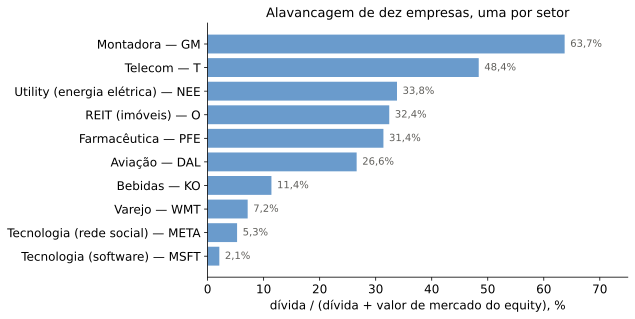
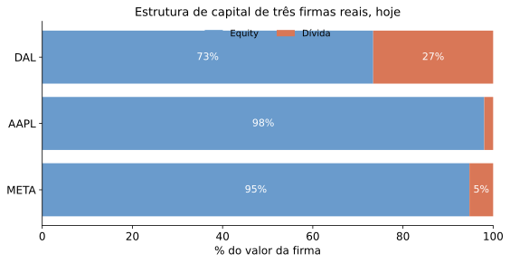
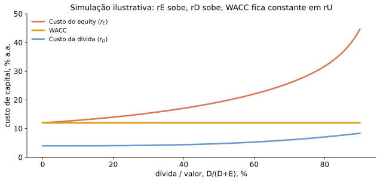
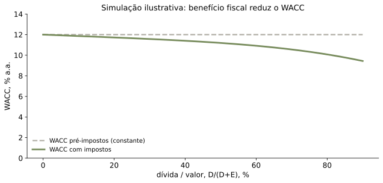
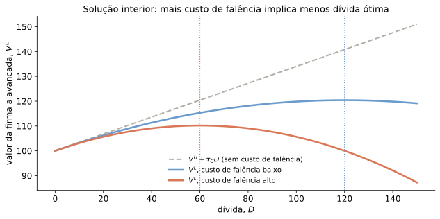

\[r = r^f + \beta\times(\text{prêmio}) = 4\% + 1,1\times 5\% = 9,5\%\]
A forma de financiar a firma — mais dívida, mais ações — muda o valor da firma?

Painel ilustrativo, não médias setoriais: um ticker por setor. Dívida vem do último balanço disponível (2025-06 a 2026-01) e market cap é corrente, portanto as datas não coincidem. Bancos/seguradoras excluídos; GM inclui dívida da GM Financial. Fonte: yfinance.

Dados reais atuais (yfinance). A dispersão que o livro-texto ilustrava persiste, mas hoje as duas gigantes de tecnologia (Meta, Apple) operam com alavancagem quase nula — a da Apple caiu bastante desde a edição do exemplo original do livro (2019: cerca de 11% dívida) —, enquanto o setor aéreo (Delta) segue historicamente mais alavancado. Estrutura de capital não é estática.
Economia incerta, duas datas \(t=0,1\), três estados \(s\in\{1,2,3\}\).
Fluxo dos ativos (não depende do financiamento), e preços de estado:
| Estado \(s\) | 1 | 2 | 3 |
|---|---|---|---|
| \(CF_1(s)\) | 6 | 5 | 3 |
| \(q(s)\) | \(2/4\) | \(1/4\) | \(1/4\) |
\[V^F=\frac{1}{4}\left(2\cdot 6+1\cdot 5+1\cdot 3\right)=5\]
Diferentes níveis de dívida \(F\) (\(CF_1^D(s)=\min\{CF_1(s),F\}\), \(CF_1^E(s)=CF_1(s)-CF_1^D(s)\)):
| \(F\) | \(CF^D(1,2,3)\) | \(V^D\) | \(CF^E(1,2,3)\) | \(V^E\) | \(V^F=V^D+V^E\) |
|---|---|---|---|---|---|
| 0 (desalavancada) | 0, 0, 0 | 0 | 6, 5, 3 | 5 | 5 |
| 1 (pouca dívida) | 1, 1, 1 | 1 | 5, 4, 2 | 4 | 5 |
| 3 (muita dívida) | 3, 3, 3 | 3 | 3, 2, 0 | 2 | 5 |
| 5 (ainda mais) | 5, 5, 3 | 4,5 | 1, 0, 0 | 0,5 | 5 |
\(V^F\) é sempre 5 — muda apenas a repartição entre dívida e ações.
\(t=0,1\) para simplificar; fluxos gerados e distribuídos em \(t=0\), \(CF_1^F(s)\) em \(t=1\).
Existe \(m\) tal que o preço de qualquer ativo com pagamento \(x\) é \(p=E[mx]\).
Fluxo para a dívida:
\[CF_1^D(s)=\min\left\{CF_1^F(s),F\right\}\]
Em todo estado de bancarrota, há falha parcial no pagamento da dívida.
\[CF_1^E(s) = CF_1^F - CF_1^D(s) = \max\left\{0,\,CF_1^F(s)-F\right\}\]
Voltaremos a discutir distorções e conflitos de interesse.
\[ \begin{align*} V^{D} & =E\left[m\cdot CF_{1}^{D}\right]\\ & =E\left[m\cdot\min\left\{ CF_{1}^{F},F\right\} \right]\\ & =E\left[m\cdot CF_{1}^{F}\right]-E\left[m\cdot\left(CF_{1}^{F}-F\right)^{+}\right] \end{align*} \]
Quando \(CF_1^F(s)\geq F\) em todo estado (dívida livre de risco):
\[V^{D}=E[mF]=E[m]\,F=\frac{F}{1+r^f}\]
Caso contrário (dívida arriscada):
\[V^{D}<\frac{F}{1+r^f}\]
\[ \begin{align*} V^{E} & =E\left[m\cdot CF_{1}^{E}\right]\\ & =E\left[m\cdot\max\left\{ 0,CF_{1}^{F}-F\right\} \right]\\ & =E\left[m\cdot\left(CF_{1}^{F}-F\right)^{+}\right] \end{align*} \]
\[V^{F}=V^{D}+V^{E}\]
Combinando os dois resultados anteriores, os termos de bancarrota se cancelam:
\[V^{F}=\underbrace{E\left[m\cdot CF_{1}^{F}\right]}_{\text{valor via lado dos ativos}}\]
Não sobra nenhum termo que dependa de \(F\).
Em mercado de capitais perfeito, o valor da firma é o VP dos fluxos gerados por seus ativos — independe da estrutura de capital.
\[V^l=V^u\]
O resultado vale para qualquer combinação de ativos mais complicada — \(V^F=VP(\{CF_t\}_{t=1}^T)\) não muda com:
Weighted Average Cost of Capital — custo de capital médio ponderado.
\[r_{WACC}=\left(\frac{V^{D}}{V^{F}}\right)r_{D}+\left(\frac{V^{E}}{V^{F}}\right)r_{E}\]
WACC é frequentemente usado para descontar \(CF_t\) de um projeto:
\[VP=-C+\frac{CF_1}{1+r_{WACC}}+\frac{CF_2}{(1+r_{WACC})^2}+\dots\]
Hipóteses centrais para isso ser válido:
Uma varejista tradicional avalia entrar no negócio de entregas por aplicativo — segmento novo, com risco sistemático diferente do seu negócio principal.
\[r = r^f + \beta\times(\text{prêmio}) = 4\% + 1,1\times 5\% = 9,5\%\]
Usar o WACC da própria varejista aqui seria um erro: o novo negócio não tem o mesmo risco do principal. (Exemplo ilustrativo, números próprios.)
\[R^{E}(s)=\frac{CF_{1}^{E}(s)}{V_{0}^{E}}=\frac{CF_1^E(s)}{E[m\,CF_1^E(s)]} \quad\Rightarrow\quad 1+r^E = E[R^E(s)]\]
\[R^{D}(s)=\frac{CF_{1}^{D}(s)}{V_{0}^{D}}=\frac{CF_1^D(s)}{E[m\,CF_1^D(s)]} \quad\Rightarrow\quad 1+r^D = E[R^D(s)]\]
\[ \begin{align*} R^{WACC}(s) &=\left(\frac{V_{0}^{D}}{V_{0}^{F}}\right)R^{D}(s) +\left(\frac{V_{0}^{E}}{V_{0}^{F}}\right)R^{E}(s)\\ &=\frac{CF_{1}^{D}(s)+CF_{1}^{E}(s)}{V_0^F} =\frac{CF_{1}^{F}(s)}{V_0^F},\\[2pt] 1+r^{WACC} &=\mathbb{E}[R^{WACC}(s)] =\frac{\mathbb{E}[CF_{1}^{F}(s)]}{\mathbb{E}[m\,CF_{1}^{F}(s)]}. \end{align*} \]
\[\mathbb{E}[R^{u}]=R^{f}+\beta_{R^u,R^*}\left\{\mathbb{E}[R^*]-R^f\right\}\]
em que \(R^*\) é o retorno do portfólio de mercado.

Simulação ilustrativa própria (não é a figura do livro): \(r_U=12\%\), \(r_D\) hipotético crescente com a alavancagem, \(r_E\) obtido pela fórmula de MM II.
Da equação de equilíbrio do WACC:
\[R^{U}=\left(\frac{V_{0}^{D}}{V_{0}^{F}}\right)R^{D}+\left(\frac{V_{0}^{E}}{V_{0}^{F}}\right)R^{E}\]
Logo:
\[R^{E}=R^{U}+\left(\frac{V_{0}^{D}}{V_{0}^{E}}\right)\left(R^{U}-R^{D}\right)\]
e, em betas:
\[\beta^{E}=\beta^{U}\left(1+\frac{V_0^D}{V_0^E}\right)-\beta^{D}\frac{V_0^D}{V_0^E}\]
Modigliani-Miller (2): o custo do equity é igual ao da firma desalavancada, mais um prêmio proporcional à alavancagem.
Retomando os casos \(F=1\) (pouca dívida) e \(F=3\) (muita dívida) de antes:
| Pouca dívida, \(F=1\) | Muita dívida, \(F=3\) | |
|---|---|---|
| \(CF^E(1,2,3)\) | 5, 4, 2 | 3, 2, 0 |
| \(V^E\) | 4 | 2 |
Pergunta em aberto: e quando a própria dívida da firma é arriscada?
\[TaxShield_t = \underbrace{\tau_C}_{\text{alíquota}}\;\underbrace{r_tD_t}_{\text{despesa com juros}}\]
\[FCF_t^l = FCF_t^u + TaxShield_t \quad\Rightarrow\quad V^l = V^u + PV(TaxShield) > V^u\]
Quando a dívida é uma perpetuidade rolada indefinidamente, todo pagamento é juros:
\[PV(TaxShield)=\tau_C D\]
Quando o credor recebe \(r^D\), a firma efetivamente dispende só \((1-\tau_C)r^D\):
\[ r_{WACC}=\underbrace{r^{E}\frac{E}{E+D}+r^{D}\frac{D}{E+D}}_{\text{WACC pré-impostos}}-\;\tau_{C}r^{D}\frac{D}{E+D} \]
Alerta: o benefício fiscal incide sobre a taxa \(r^D\), não sobre o retorno bruto \(R^D=(1+r^D)\).

Simulação ilustrativa própria; alíquota \(\tau_C\) ilustrativa de 34% (aproximação da alíquota combinada de IRPJ+CSLL no Brasil — não consta do material-fonte).
Se o valor sobe e o custo de financiamento cai com dívida, por que nenhuma firma se financia só com dívida?
Deve haver algum custo. Candidato natural: custos de falência.
Diretos: custos legais, consultorias, avaliações contábeis, atrasos de processo
Indiretos: perda de clientes, fornecedores (ex.: Swiss Air, Varig), saída de funcionários-chave, venda de ativos a preços adversos

Simulação ilustrativa própria (não é a figura do livro), com \(\tau_C\) ilustrativo de 34% e custo de falência \(\propto D^2\).
| Resultado | Status |
|---|---|
| MM I/II sem fricções (irrelevância, \(r_E=r_U+\frac{D}{E}(r_U-r_D)\)) | Resultado padrão |
| WACC pré-impostos constante em alavancagem | Resultado padrão |
| Benefício fiscal da dívida eleva \(V^L\) | Resultado padrão |
| Trade-off determina alavancagem ótima exata | Debate ativo — custos de falência são difíceis de medir (síntese própria) |
| Homemade leverage com dívida arriscada | Pergunta em aberto neste material |